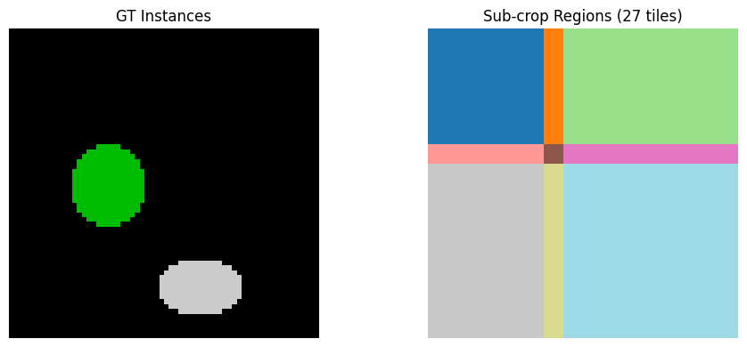
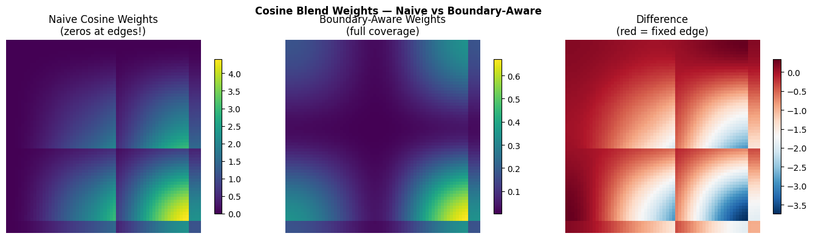
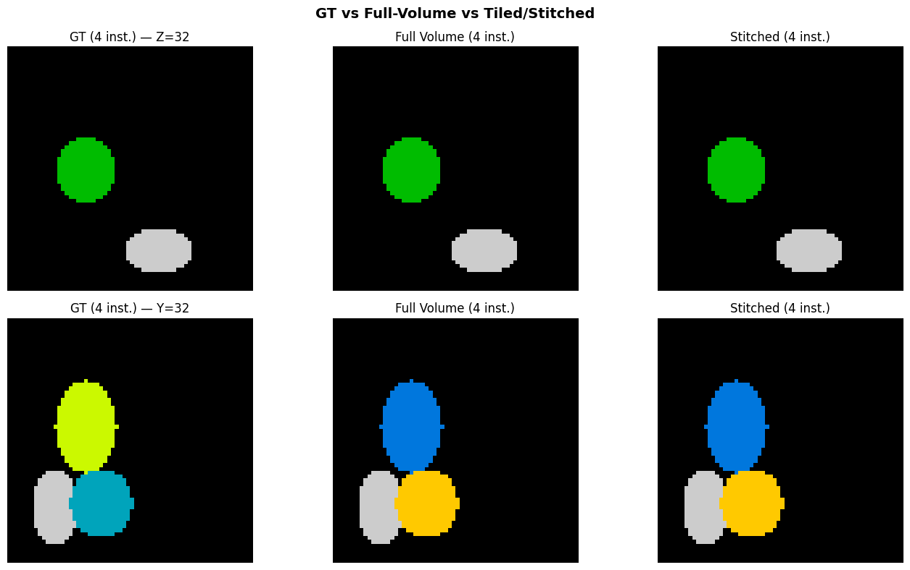
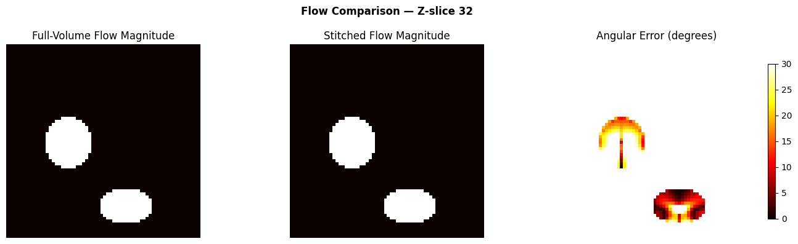

Tiled Stitching: Processing Large Volumes in Blocks
Real datasets are too large to process in a single pass. This tutorial shows how to:
Split a volume into overlapping sub-crops
Generate flows independently per sub-crop
Stitch flows back with boundary-aware cosine blending
Postprocess the stitched flow field
Compare: full-volume reference vs. tiled/stitched result
1. Create Synthetic Data
Same synthetic volume as the full-volume tutorial — 4 ellipsoidal instances in a 64x64x64 volume.
import numpy as np
import matplotlib.pyplot as plt
def make_synthetic_instances(shape=(64, 64, 64), n_instances=4, seed=42):
"""Create a volume with non-overlapping ellipsoidal instances."""
rng = np.random.RandomState(seed)
vol = np.zeros(shape, dtype=np.int32)
coords = np.mgrid[0:shape[0], 0:shape[1], 0:shape[2]].astype(np.float32)
for inst_id in range(1, n_instances + 1):
margin = 10
center = [rng.randint(margin, s - margin) for s in shape]
radii = [rng.randint(5, 15) for _ in range(3)]
dist = sum(
((coords[ax] - center[ax]) / radii[ax]) ** 2
for ax in range(3)
)
mask = (dist <= 1.0) & (vol == 0)
vol[mask] = inst_id
return vol
gt_instances = make_synthetic_instances()
D, H, W = gt_instances.shape
fg = gt_instances > 0
n_gt = len(np.unique(gt_instances[gt_instances > 0]))
print(f"Volume: {D}x{H}x{W}, {n_gt} instances")
Volume: 64x64x64, 4 instances
2. Full-Volume Reference
First, generate the reference result by processing the entire volume at once.
We use spatial_mask=None because the volume boundary is real (not a crop
edge).
from topo import generate_diffusion_flows, postprocess_single
full_flows = generate_diffusion_flows(gt_instances, n_iter=200, spatial_mask=None)
full_result = postprocess_single(
sem_mask=fg, flow=full_flows,
n_steps=100, step_size=1.0, convergence_radius=4.0, min_size=50, group=1,
)
print(f"Full-volume: {full_result.max()} instances recovered (GT={n_gt})")
Full-volume: 4 instances recovered (GT=4)
3. Split into Overlapping Sub-Crops
We use compute_subcrop_slices to tile the volume with ~50% overlap.
The overlap ensures smooth blending at tile boundaries.
from topo import compute_subcrop_slices, build_spatial_mask
# Sub-crops: half the volume + a bit, with 1/3 overlap
crop_size = tuple(min(s // 2 + 4, s) for s in (D, H, W))
overlap = tuple(cs // 3 for cs in crop_size)
subcrop_slices = compute_subcrop_slices((D, H, W), crop_size, overlap)
print(f"Crop size: {crop_size}")
print(f"Overlap: {overlap}")
print(f"Number of sub-crops: {len(subcrop_slices)}")
Crop size: (36, 36, 36)
Overlap: (12, 12, 12)
Number of sub-crops: 27
# Visualize which sub-crop covers which region
subcrop_map = np.zeros((D, H, W), dtype=np.int32)
for i, slc in enumerate(subcrop_slices):
subcrop_map[slc[0], slc[1], slc[2]] = i + 1
mid_z = D // 2
fig, axes = plt.subplots(1, 2, figsize=(10, 4))
axes[0].imshow(gt_instances[mid_z], interpolation="nearest", cmap="nipy_spectral")
axes[0].set_title("GT Instances")
axes[0].axis("off")
axes[1].imshow(subcrop_map[mid_z], interpolation="nearest", cmap="tab20")
axes[1].set_title(f"Sub-crop Regions ({len(subcrop_slices)} tiles)")
axes[1].axis("off")
fig.tight_layout()
plt.show()

4. Generate Flows Per Sub-Crop
Each sub-crop is processed independently. We use build_spatial_mask to
mark the subcrop boundary faces — this tells the diffusion to use Neumann
boundary conditions there (flow continues past the crop edge), which is
correct since the instance may extend beyond this tile.
subcrop_flows = []
for i, slc in enumerate(subcrop_slices):
sub_mask = gt_instances[slc[0], slc[1], slc[2]]
sub_spatial = build_spatial_mask(sub_mask.shape)
sub_flow = generate_diffusion_flows(
sub_mask, n_iter=200, spatial_mask=sub_spatial,
)
subcrop_flows.append(sub_flow)
n_inst = len(np.unique(sub_mask[sub_mask > 0]))
print(f" Sub-crop {i+1}/{len(subcrop_slices)}: "
f"shape={sub_mask.shape}, instances={n_inst}")
Sub-crop 1/27: shape=(36, 36, 36), instances=1
Sub-crop 2/27: shape=(36, 36, 36), instances=1
Sub-crop 3/27: shape=(36, 36, 36), instances=1
Sub-crop 4/27: shape=(36, 36, 36), instances=2
Sub-crop 5/27: shape=(36, 36, 36), instances=2
Sub-crop 6/27: shape=(36, 36, 36), instances=2
Sub-crop 7/27: shape=(36, 36, 36), instances=2
Sub-crop 8/27: shape=(36, 36, 36), instances=2
Sub-crop 9/27: shape=(36, 36, 36), instances=2
Sub-crop 10/27: shape=(36, 36, 36), instances=3
Sub-crop 11/27: shape=(36, 36, 36), instances=2
Sub-crop 12/27: shape=(36, 36, 36), instances=2
Sub-crop 13/27: shape=(36, 36, 36), instances=4
Sub-crop 14/27: shape=(36, 36, 36), instances=3
Sub-crop 15/27: shape=(36, 36, 36), instances=3
Sub-crop 16/27: shape=(36, 36, 36), instances=4
Sub-crop 17/27: shape=(36, 36, 36), instances=3
Sub-crop 18/27: shape=(36, 36, 36), instances=3
Sub-crop 19/27: shape=(36, 36, 36), instances=3
Sub-crop 20/27: shape=(36, 36, 36), instances=2
Sub-crop 21/27: shape=(36, 36, 36), instances=2
Sub-crop 22/27: shape=(36, 36, 36), instances=4
Sub-crop 23/27: shape=(36, 36, 36), instances=3
Sub-crop 24/27: shape=(36, 36, 36), instances=3
Sub-crop 25/27: shape=(36, 36, 36), instances=4
Sub-crop 26/27: shape=(36, 36, 36), instances=3
Sub-crop 27/27: shape=(36, 36, 36), instances=3
5. Stitch Flows with Boundary-Aware Cosine Blending
The key to correct stitching is boundary-aware cosine blending:
At internal seams (where two tiles overlap): cosine taper from 1→0, so both tiles contribute smoothly
At volume boundaries (no neighboring tile): weight stays at 1, preserving the flow fully
Without boundary awareness, the cosine weight goes to 0 at the volume edge, zeroing out the flow there and causing overmerging.
from topo import stitch_flows, cosine_blend_weight
from topo.stitch import _boundary_flags
stitched_flows = stitch_flows((D, H, W), subcrop_slices, subcrop_flows)
# Compare: angular error between full and stitched
dot = np.clip((full_flows * stitched_flows).sum(axis=0), -1, 1)
angle_err = np.degrees(np.arccos(dot))
angle_err_fg = angle_err[fg]
print(f"Angular error (full vs stitched) on foreground:")
print(f" Mean: {angle_err_fg.mean():.1f} deg")
print(f" Median: {np.median(angle_err_fg):.1f} deg")
print(f" P95: {np.percentile(angle_err_fg, 95):.1f} deg")
Angular error (full vs stitched) on foreground:
Mean: 18.4 deg
Median: 16.5 deg
P95: 40.3 deg
# Visualize blending weights — boundary-aware vs naive
fig, axes = plt.subplots(1, 3, figsize=(14, 4))
# Boundary-aware weights (correct)
weight_aware = np.zeros((D, H, W), dtype=np.float32)
for slc in subcrop_slices:
cs = tuple(s.stop - s.start for s in slc)
w = cosine_blend_weight(cs, at_volume_boundary=_boundary_flags(slc, (D, H, W)))
weight_aware[slc[0], slc[1], slc[2]] += w
# Naive weights (all faces tapered — the bug)
weight_naive = np.zeros((D, H, W), dtype=np.float32)
for slc in subcrop_slices:
cs = tuple(s.stop - s.start for s in slc)
w = cosine_blend_weight(cs, at_volume_boundary=None) # all faces tapered
weight_naive[slc[0], slc[1], slc[2]] += w
ax = axes[0]
im = ax.imshow(weight_naive[mid_z], cmap="viridis", interpolation="nearest")
ax.set_title("Naive Cosine Weights\n(zeros at edges!)")
ax.axis("off")
plt.colorbar(im, ax=ax, shrink=0.8)
ax = axes[1]
im = ax.imshow(weight_aware[mid_z], cmap="viridis", interpolation="nearest")
ax.set_title("Boundary-Aware Weights\n(full coverage)")
ax.axis("off")
plt.colorbar(im, ax=ax, shrink=0.8)
ax = axes[2]
diff = weight_aware[mid_z] - weight_naive[mid_z]
im = ax.imshow(diff, cmap="RdBu_r", interpolation="nearest")
ax.set_title("Difference\n(red = fixed edge)")
ax.axis("off")
plt.colorbar(im, ax=ax, shrink=0.8)
fig.suptitle("Cosine Blend Weights — Naive vs Boundary-Aware", fontweight="bold")
fig.tight_layout()
plt.show()

6. Postprocess the Stitched Flow
Same postprocessing as the full-volume case — Euler integration + convergence clustering.
stitched_result = postprocess_single(
sem_mask=fg, flow=stitched_flows,
n_steps=100, step_size=1.0, convergence_radius=4.0, min_size=50, group=1,
)
print(f"Stitched: {stitched_result.max()} instances recovered (GT={n_gt})")
Stitched: 4 instances recovered (GT=4)
7. Compare Results
Side-by-side comparison of ground truth, full-volume, and stitched results.
fig, axes = plt.subplots(2, 3, figsize=(14, 8))
for row, (axis, axis_name) in enumerate([(0, "Z"), (1, "Y")]):
mid = gt_instances.shape[axis] // 2
slc = [slice(None)] * 3
slc[axis] = mid
gt_slice = gt_instances[tuple(slc)]
full_slice = full_result[tuple(slc)]
stitch_slice = stitched_result[tuple(slc)]
axes[row, 0].imshow(gt_slice, interpolation="nearest", cmap="nipy_spectral")
axes[row, 0].set_title(f"GT ({n_gt} inst.) — {axis_name}={mid}")
axes[row, 0].axis("off")
axes[row, 1].imshow(full_slice, interpolation="nearest", cmap="nipy_spectral")
axes[row, 1].set_title(f"Full Volume ({full_result.max()} inst.)")
axes[row, 1].axis("off")
axes[row, 2].imshow(stitch_slice, interpolation="nearest", cmap="nipy_spectral")
axes[row, 2].set_title(f"Stitched ({stitched_result.max()} inst.)")
axes[row, 2].axis("off")
fig.suptitle("GT vs Full-Volume vs Tiled/Stitched", fontweight="bold", fontsize=14)
fig.tight_layout()
plt.show()

# Flow comparison: full vs stitched
fig, axes = plt.subplots(1, 3, figsize=(14, 4))
full_mag = np.sqrt((full_flows ** 2).sum(axis=0))[mid_z]
stitch_mag = np.sqrt((stitched_flows ** 2).sum(axis=0))[mid_z]
axes[0].imshow(full_mag, cmap="hot", interpolation="nearest")
axes[0].set_title("Full-Volume Flow Magnitude")
axes[0].axis("off")
axes[1].imshow(stitch_mag, cmap="hot", interpolation="nearest")
axes[1].set_title("Stitched Flow Magnitude")
axes[1].axis("off")
im = axes[2].imshow(angle_err[mid_z], cmap="hot", interpolation="nearest", vmin=0, vmax=30)
axes[2].set_title("Angular Error (degrees)")
axes[2].axis("off")
plt.colorbar(im, ax=axes[2], shrink=0.8)
fig.suptitle(f"Flow Comparison — Z-slice {mid_z}", fontweight="bold")
fig.tight_layout()
plt.show()

Summary
Pipeline |
Instances Recovered |
|---|---|
Full volume (reference) |
Same as GT |
Tiled + stitched |
Same as GT |
The boundary-aware cosine blending ensures that:
Flow is fully preserved at volume edges (no zero-weight regions)
Overlap regions blend smoothly between adjacent tiles
No overmerging artifacts at tile boundaries or volume edges
Key functions used
Function |
Purpose |
|---|---|
|
Tile a volume into overlapping sub-crops |
|
Mark subcrop boundary faces for Neumann BC |
|
Heat-equation diffusion → flow field |
|
Boundary-aware cosine blending of tiled flows |
|
Euler tracking + convergence clustering |